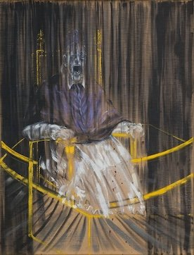

Study after Velázquez's Portrait of Pope Innocent X
Francis Bacon · 1953 · Oil on canvas · 153 × 118 cm · Des Moines Art Center
In copyright. Look and learn: shown for study, not for download.
Bacon painted around fifty variants of Velázquez's portrait of Innocent X between 1949 and 1971, and destroyed a great many he was unhappy with. He deliberately avoided the original for years and saw it in person only much later in his life. This canvas was a wedding present to Carter Burden from his uncle and hung in the entrance hall of the Burdens' apartment in the Dakota. The Des Moines Art Center bought it in 1980.